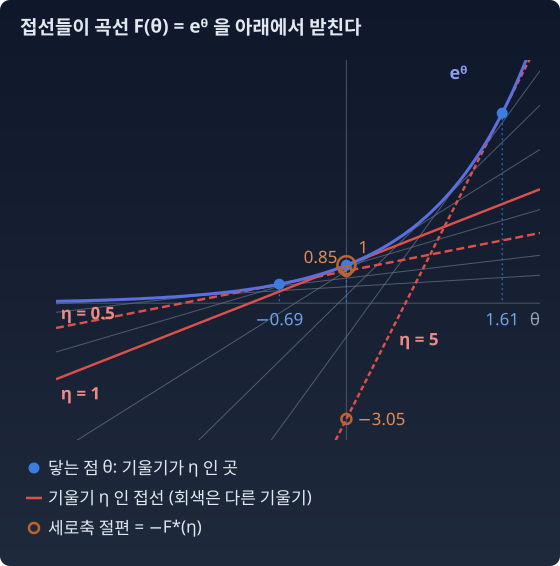

주사위를 아주 많이 던졌는데 기록은 사라지고 「평균이 4.5였다」는 말만 남았다고 하자. 다음에 던질 때 면마다 확률을 얼마로 매겨야 할까? 들은 평균은 지키고 그 밖에는 아무것도 보태지 않는 분포, 곧 가장 고르게 퍼진 분포를 고르는 것이 답이다. 그 분포를 찾는 계산 전체는 분포의 가족(지수족)을 다룰 때 한다. 여기서 미리 볼 것은 그 계산의 마지막 걸음이다. 답이 되는 분포는 이웃한 두 면의 확률 비가 늘 같은 꼴이라서, 그 비를 정하는 숫자 하나만 고르면 분포 하나가 정해진다. 그리고 그 분포의 평균은 이 숫자에 대한 볼록함수 하나의 기울기로 나온다. 그래서 「평균이 4.5인 분포를 찾아라」는 「그 볼록 곡선에서 기울기가 4.5인 점을 찾아라」가 된다. 그런데 전해 듣는 평균은 그때마다 다르다. 다음 사람은 4.0이라고, 그다음 사람은 5.2라고 전해 줄 수 있다. 평균을 들을 때마다 같은 곡선 위에서 기울기가 그 값인 점을 처음부터 다시 찾아야 한다.
가장 단순한 볼록 곡선으로 이 일을 해 보자. 앞 절에서 본 eˣ 다. 이제부터는 변수 글자를 x 대신 θ 로 써서 eᶿ 로 적는다. 글자만 바꿨을 뿐 eˣ 와 같은 함수이고, eˣ 로 적어도 계산은 하나도 달라지지 않는다. θ 를 쓰는 까닭은 위 주사위의 「비를 정하는 숫자」처럼, 이 변수가 뒤에서 분포를 정하는 숫자(모수)의 자리에 앉기 때문이다. 정보기하학 책들은 이 자리를 흔히 θ 로, 그 자리의 기울기를 그리스 문자 η(에타)로 적는다.
“eᶿ 곡선에서 기울기가 5인 점은 어디인가? 기울기가 1이면, 0.5이면? 기울기가 바뀔 때마다 방정식을 새로 풀지 않고, 답을 표 하나로 적어 둘 수는 없을까?”
기울기마다 접선 한 줄
eᶿ 에서 기울기가 η 인 점은 eᶿ = η 를 풀어 θ = log η 다. 그 점에 접선을 그어 보자. 곡선이 볼록하므로 접선은 곡선 전체를 아래에서 받친다. 기울기가 정해진 직선은 세로축과 만나는 높이(절편) 하나만 알면 정해진다. 기울기 셋으로 표를 만들면 이렇다.
기울기 η
닿는 점 θ = log η
접선의 세로축 절편 eᶿ − ηθ
0.5
−0.693
0.847
1
0
1
5
1.609
−3.047

볼록 곡선 F(θ) = eᶿ 과 그 접선들. 기울기 η = 0.5, 1, 5 인 접선(빨강)이 각각 θ = −0.69, 0, 1.61 에서 곡선에 닿고(파란 점), 세로축과 0.85, 1, −3.05 에서 만난다(주황 고리). 이 절편에 마이너스를 붙인 값이 아래에서 정의하는 F*(η) 다. 회색 선은 다른 기울기의 접선으로, 접선들이 모두 곡선을 아래에서 받친다
기울기를 촘촘히 바꾸며 이 표를 채우면, 표의 줄마다 접선이 하나씩 생긴다. 표에서 곡선을 되살리려면 그 접선들을 모두 다시 그어, 접선들을 아래에서 감싸 올린 가장 높은 선을 읽으면 된다. 곡선을 「θ 마다의 높이」 대신 「기울기마다의 접선」으로 적은 것이다. 이렇게 적으면 「기울기가 η 인 점은 어디인가?」라는 물음이 방정식 풀기가 아니라 표 읽기가 된다. 이 표를 식으로 적은 것이 르장드르 변환이다.
읽는 법은 이렇다. 기울기 η인 직선 θη를 긋고, 곡선 F(θ)가 그 직선보다 가장 많이 아래에 있는 곳을 찾는다. 그 최대 간격이 F*(η)다. F가 매끄럽고 엄격 볼록이면 간격이 가장 큰 곳은 기울기가 같아지는 곳, F′(θ) = η 인 점이다. 그 점의 접선은 y = ηθ − F*(η) 이다. y절편이 −F*(η), 곧 앞 표의 세로축 절편에 마이너스를 붙인 값이다. 표로 확인하면 F*(5) = 3.047, F*(1) = −1, F*(0.5) = −0.847 이다.
손으로 한 번 — F(θ) = eᶿ
dθd(θη−eθ)=η−eθ=0⇒θ=logη,F∗(η)=ηlogη−η
θηF∗원래변수, 여기서는간격이가장큰점기울기변수(η>0)eθ의르장드르변환
η > 0 일 때의 답이다. 정의역도 따로 봐야 한다. η = 0 이면 θη − eᶿ = −eᶿ 이고, θ를 한없이 왼쪽으로 보내면 0에 다가가므로 F*(0) = 0 (η log η 의 극한과 같다). η < 0 이면 θ → −∞ 에서 θη 가 한없이 커지므로 F*(η) = +∞ 다.
두 번 변환하면 제자리로
표에서 곡선을 되살리는 일도 같은 연산이다. F* 를 한 번 더 변환한 F**(θ) = supη(θη − F*(η)) 가 원래 함수로 돌아온다: (F*)* = F. 단 F 가 볼록하고 끊김 없이 닫혀 있을 때(닫힌 볼록함수) 이야기다. 이것은 원본과 짝 함수가 대등하다는 뜻이다. 한쪽이 「진짜」이고 다른 쪽이 「그림자」가 아니다. θ 에서 η 로 가는 것과 η 에서 θ 로 돌아오는 것이 같은 연산이다.
조건이 붙는 까닭은 이렇다. F 가 엄격 볼록이고 매끄러우면 기울기 F′ 이 계속 커지기만 하므로, 점과 기울기가 일대일로 짝지어진다. 볼록하지 않으면 한 기울기의 접선이 곡선의 여러 곳에 닿을 수 있고, 두 번 변환해도 원래 함수가 돌아오지 않는다. 무엇이 돌아오는지는 이 장의 마지막 문제(오목한 굴곡을 가진 함수)에서 직접 확인한다.
그래서 "볼록하면 좋다"에 두 번째 이유가 붙는다.
첫 번째: 볼록하면 국소 최소가 전역 최소다 (최적화).
두 번째: 볼록하면 두 번 변환해 제자리로 돌아온다 (쌍대성). 쌍대성(duality)은 한쪽이 정해지면 다른 쪽이 정해지는 짝 관계다.
그리고 확률에서 자주 만나는 함수가 볼록이다. −log 가 그렇고, 분포의 확률 합을 1로 맞추는 정규화 상수의 로그도 그렇다. 르장드르 변환이 확률의 세계에서 쓰이는 까닭이다.
기울기의 역함수는 쌍대의 기울기
접선 한 개가 두 세계를 잇는다. θ에서의 기울기가 η이면, 거꾸로 F*의 η에서의 기울기가 θ다.
η=F′(θ)⟺θ=(F∗)′(η),(F′)−1=(F∗)′
F′(F∗)′θ,η원본의기울기: θ↦η쌍대의기울기: η↦θ같은접선이가리키는두좌표
eᶿ로 확인하면, F′(θ) = eᶿ 의 역함수는 log η 이고, (η log η − η)′ = log η 다. 맞는다. 기울기를 한 번 더 미분하면 두 번 미분한 값끼리도 짝이 맞는다: F″(θ) · (F*)″(η) = 1. 원본이 가파르게 오므라드는 곳에서 쌍대는 완만하게 오므라든다.
직접 움직여 보기
불러오는 중…
파이썬
import numpy as np
theta = np.linspace(-10, 5, 30001) # θ 격자
eta = np.linspace(0.05, 20, 400)
F = np.exp(theta)
Fstar = np.max(eta[:, None] * theta[None, :] - F[None, :], axis=1) # F*(η) = sup(θη − F)
exact = eta * np.log(eta) - eta
print(f"F* 수치 vs η log η − η : 최대 오차 {np.max(np.abs(Fstar - exact)):.2e}")
th_back = np.linspace(-2, 2, 5)
Fss = np.max(th_back[:, None] * eta[None, :] - Fstar[None, :], axis=1) # F**(θ) = sup(θη − F*)
for t, v in zip(th_back, Fss):
print(f"θ = {t:+.1f} F**(θ) = {v:.4f} e^θ = {np.exp(t):.4f}")
# F* 수치 vs η log η − η : 최대 오차 5.39e-07
# θ = -2.0 F**(θ) = 0.1346 e^θ = 0.1353
# θ = -1.0 F**(θ) = 0.3674 e^θ = 0.3679
# θ = +0.0 F**(θ) = 1.0000 e^θ = 1.0000
# θ = +1.0 F**(θ) = 2.7182 e^θ = 2.7183
# θ = +2.0 F**(θ) = 7.3890 e^θ = 7.3891
왕복한 값이 eᶿ로 돌아온다. θ = −2 에서 조금 어긋나는 것은 η 격자 간격(0.05)이 그 점의 기울기 e⁻² ≈ 0.135 에 비해 거칠기 때문이다. 딱 맞는 기울기의 받침 직선이 격자에 없어서, 이웃 기울기의 직선이 조금 낮게 받친다.
ML에서: 로짓과 확률은 한 쌍의 좌표
이진 분류 모델은 로짓(시그모이드에 넣기 전의 점수) θ 하나를 내고, 시그모이드로 확률 η = 1/(1 + e−θ) 을 만든다. 이 시그모이드가 바로 F(θ) = log(1 + eᶿ) 의 기울기다(위 위젯의 세 번째 함수). 그러니 로짓과 확률은 볼록함수 하나가 잇는 원래 좌표와 기울기 좌표다. 이 짝이 학습을 시작하는 자리에서 어떻게 쓰이는지는 아래 문제 5에서 본다.
호기심 상자 — 왜 하필 르장드르인가: 극좌표·푸리에와 견주면
원의 넓이를 직교좌표 (x, y)로 적분하면 경계가 제곱근 안에 들어가 번거롭다. 극좌표 (r, φ)로 옮기면(φ 는 각도를 적는 그리스 문자로, 「파이(phi)」로 읽는다) 경계가 그냥 「r ≤ R」이 되어 적분이 한 줄로 끝난다. 푸리에 변환(시간 → 주파수)과 라플라스 변환(미분 → 곱셈)도 같은 전략이다. 어려운 문제를 다른 좌표로 보내서 풀고, 답을 다시 가져온다. 르장드르 변환도 그런 좌표 바꾸기의 하나지만 두 가지가 다르다.
재료가 다르다. 푸리에와 라플라스는 함수를 적분해서 옮긴다. 르장드르 변환의 정의는 가장 큰 값 찾기(sup)다. 기울기 η 하나에 대해 모든 θ 를 훑어 가장 큰 값을 고른다. 정의는 곡선 전체를 보지만, F 가 매끄럽고 엄격 볼록이면 답은 F′(θ) = η 인 한 점의 접선 하나로 읽힌다.
역변환이 따로 없다. 푸리에 변환은 되돌리는 공식이 따로 있다(부호와 상수가 다르다). 르장드르 변환은 닫힌 볼록함수에서 같은 변환을 한 번 더 하면 제자리로 돌아온다.
수확
“기울기가 η 인 점을 찾는 물음이, 접선의 표 쪽에서는 읽기만 하면 되는 물음이 된다. 그 표가 르장드르 변환이다. 닫힌 볼록함수라면 변환을 두 번 하면 원본이 돌아온다. 원본과 짝 함수가 대등하다 — 쌍대성의 뿌리다.”
“하나의 볼록함수 = 두 좌표계에서 본 같은 정보. 점의 모음으로 보면 F, 접선의 모음으로 보면 F*.”
그림: 아드리앵마리 르장드르(1750년대–1833). 줄리앵레오폴 부아이가 1820년 무렵 그린 수채 풍자화(얼굴을 과장해 그린 그림). 출처 Wikimedia Commons, 퍼블릭 도메인
아드리앵마리 르장드르는 1750년대에 태어나 파리에서 일한 수학자다. 그는 뒷날 피비린내 나는 혁명이 얼마 안 되던 재산을 앗아 갔다고 적었다. 이 장의 변환은 1787년, 그가 최소곡면 문제(주어진 테두리에 걸리는 곡면 가운데 넓이가 가장 작은 것을 찾는 문제)를 연구하면서 처음 썼다.
그의 이름이 붙은 일은 하나 더 있다. 1805년 혜성의 궤도를 구하는 법을 다룬 책의 부록에서, 그는 관측값과 예측값의 차이를 제곱해 더한 값을 가장 작게 하라는 최소제곱법을 처음으로 분명하게 출판했다. 기계학습의 평균제곱오차(MSE) 손실의 원형이다. 1809년 가우스가 자신은 1795년부터 이 방법을 써 왔다고 밝혀, 두 사람 사이에 누가 먼저인지를 두고 다툼이 있었다.
한 세대 뒤인 1830년대, 해밀턴(Hamilton)이 역학을 속도 대신 운동량으로 다시 쓸 때 같은 변환이 다리가 되었다. 열역학에서도 내부 에너지, 엔탈피, 헬름홀츠 자유에너지, 깁스 자유에너지가 이 변환으로 서로 이어진다.
확률로 들어온 길은 보험 회사의 장부였다. 스웨덴의 하랄드 크라메르(Harald Cramér)는 1920년대에 생명보험 회사의 보험계리사(보험료와 지급액을 셈하는 사람)로 일했다. 보험 회사는 보험료를 매달 일정하게 받지만 청구는 우연히 들어온다. 회사가 알아야 하는 것은 청구의 합이 평균보다 크게 튀어 받은 보험료를 넘어설 확률이다. 크라메르는 1938년 논문에서 이처럼 평균에서 크게 벗어날 확률이 관측 수가 늘수록 지수함수처럼 빠르게 줄어든다는 것을 엄밀하게 보였다. 오늘날에는 그 줄어드는 빠르기를 로그 적률생성함수, 곧 log E[eθX] 의 르장드르 변환으로 적는다. 예를 들어 공정한 동전을 n 번 던져 앞면 비율이 0.7 이상 나올 확률은, n 이 커질수록 대략 e−0.082n 의 빠르기로 준다. 0.082 는 log((1 + eᶿ)/2) 를 르장드르 변환해 0.7 에서 읽은 값이다(n = 1000 이면 실제 확률의 로그를 n 으로 나눈 값이 −0.085 로, 그 값에 다가가는 중이다).
정보기하학에서 이 변환은 분포를 적는 두 좌표를 잇는다. 분포 가족을 log p(x) = θ·t(x) − F(θ) 꼴로 적으면(지수족), t(x) 는 데이터에서 뽑은 요약값(충분통계량), θ 는 그 요약값에 곱해지는 모수(분포를 정하는 숫자. 자연모수), F(θ) 는 확률의 합을 1로 맞추는 정규화 상수의 로그(로그정규화자)다. 크라메르의 log E[eθX] 가 바로 이런 F 다. θ 에서 기울기 η = F′(θ), 곧 요약값의 평균(기대모수)으로 넘어가는 것이 르장드르 변환이고, 짝 함수 F*(η) 는 많은 가족에서 엔트로피(−Σ p log p)에 마이너스를 붙인 값이 된다. 200년 넘은 도구가 확률분포의 두 좌표계를 잇는 다리로 살아 있다.
문제 4. 세 함수의 르장드르 변환
세 볼록함수 (가) F(θ) = eᶿ (나) F(θ) = θ log θ (θ > 0) (다) F(θ) = −log θ (θ > 0) 의 르장드르 변환을 따져 보자. (나)와 (다)의 F*(η)를 손으로 구하고, F*가 유한한 η의 범위(정의역)를 밝혀라. (가)의 답 η log η − η 는 본문에서 손으로 구했다. 이번에는 θ ∈ [−5, 5] 격자에서 sup를 수치로 찾아 η = 2, 200, −1 에서 이 식과 비교하라. 르장드르 위젯에서 (나)·(다)의 함수를 고르고 「정답 곡선 겹쳐 보기」를 켜면 손으로 구한 답과 견줄 수 있다.
0.5θ + log θ 요. θ가 커지면 둘 다 커지니까… 끝없이 커져요. 그러면 θ = −1/η = −2 라는 답은 θ > 0 밖이라서 애초에 후보가 아니었네요. η ≥ 0 이면 F* = +∞, η < 0 일 때만 −1 − log(−η) 예요.
선생님
미분해서 0 놓기는 "후보가 정의역 안에 있을 때"만 답을 줘요. (나)는요?
이서연
η − log θ − 1 = 0, θ = exp(η−1) 이고 F*(η) = exp(η−1). 이건 θ가 항상 양수라 모든 η에서 돼요.
김민준
(가)는 제가 격자로 돌렸는데요, η = 2 에서는 −0.6137 로 η log η − η 랑 딱 맞아요. 근데 η = 200 에서는 격자가 851.59, 식이 859.66 이에요. 그리고 η = −1 에서는 격자가 4.99 를 줘요. 식은 +∞ 라는데요.
선생님
η = 200 에서 sup이 잡히는 θ는 어디예요?
김민준
θ = log 200 ≈ 5.30 이요. 격자는 5 에서 끝나니까 진짜 최고점을 못 보고 끝에서 멈췄어요. η = −1 도 θ를 왼쪽으로 끝없이 보내야 커지는데 −5 에서 잘렸고요.
선생님
격자 sup는 언제나 진짜 sup 이하예요. 격자 끝에서 최댓값이 나오면 경고로 받아들여야 해요.
김민준
채점 스크립트가 점수 상한을 100점으로 잘라 놓아서 가산점 받은 사람들이 다 100점으로 찍힌 적이 있어요. 끝에 몰린 값은 의심하라는 거네요.
문제 5. 드문 양성, 편향의 첫 값
양성이 2%뿐인 데이터로 이진 분류기를 학습한다. 학습을 시작하는 순간의 모델을, 입력과 상관없이 같은 로짓 θ 하나(마지막 층의 편향)를 내는 모델로 보자. 모델이 내는 양성 확률은 η = F′(θ), F(θ) = log(1 + eᶿ) 이고, 데이터 전체의 평균 교차엔트로피(정답에 준 확률의 −log 를 평균한 손실)는 F(θ) − 0.02θ 이다. (가) 이 손실을 가장 작게 하는 θ 에서 η 는 얼마인가? (나) 그 θ 를 짝 함수 F*(η) = η log η + (1 − η) log(1 − η) 의 기울기로 구하라. (다) θ = 0 에서 시작할 때의 손실과 가장 작은 손실을 견주어라. (라) 양성이 하나도 없는 데이터라면 어떻게 되는가? 르장드르 위젯에서 「문제 5 불러오기」를 누르면 log(1 + eᶿ) 가 θ = 0 에서 시작한다. 왼쪽 그림 위에 뜨는 기울기 η 를 보며 θ 를 옮겨 보라.
함께 풀기
김민준
양성 확률을 0.02 로 맞추면 되니까, 편향을 0.02 로 두면 되죠.
선생님
편향이 0.02 이면 모델이 내는 양성 확률은 얼마예요?
김민준
시그모이드에 0.02 를 넣으면… 0.505 예요. 거의 반반이에요. 로짓 자리에 확률을 넣었어요.
이서연
손실을 θ 로 미분하면 F′(θ) − 0.02 = 0 이야. 기울기가 0.02 인 점을 찾는 문제니까 (가)의 답은 η = 0.02. 원래 좌표에서는 방정식을 풀어야 하지만 (F′)⁻¹ = (F*)′ 이니까, θ = (F*)′(0.02) = log 0.02 − log 0.98 = −3.89 예요.
김민준
경사하강으로도 돌려 봤어요. 학습률 1로 10번 걸으면 −2.15, 100번이면 −3.74, 1000번이면 −3.89 에 닿아요. 천 걸음 걸어 닿는 곳을 짝 함수의 기울기가 한 줄로 알려 주네요.
0.098 은 F(θ) − 0.02θ 의 가장 작은 값이니까 정의에 따라 −F*(0.02) 예요. 가장 작은 손실이 짝 함수에 마이너스를 붙인 값, 곧 양성 비율 0.02 의 엔트로피네요.
선생님
실제로 물체 검출 모델 RetinaNet(린 등, 2017)은 드문 물체를 찾는 마지막 층의 편향을 b = −log((1 − π)/π), π = 0.01 로 두고 학습을 시작했어요. 처음부터 드문 쪽 확률이 0.01쯤 나오게 해서, 수많은 배경 예제의 큰 손실이 학습 초반을 흔들지 않게 하려고요. 이 식은 무엇이에요?